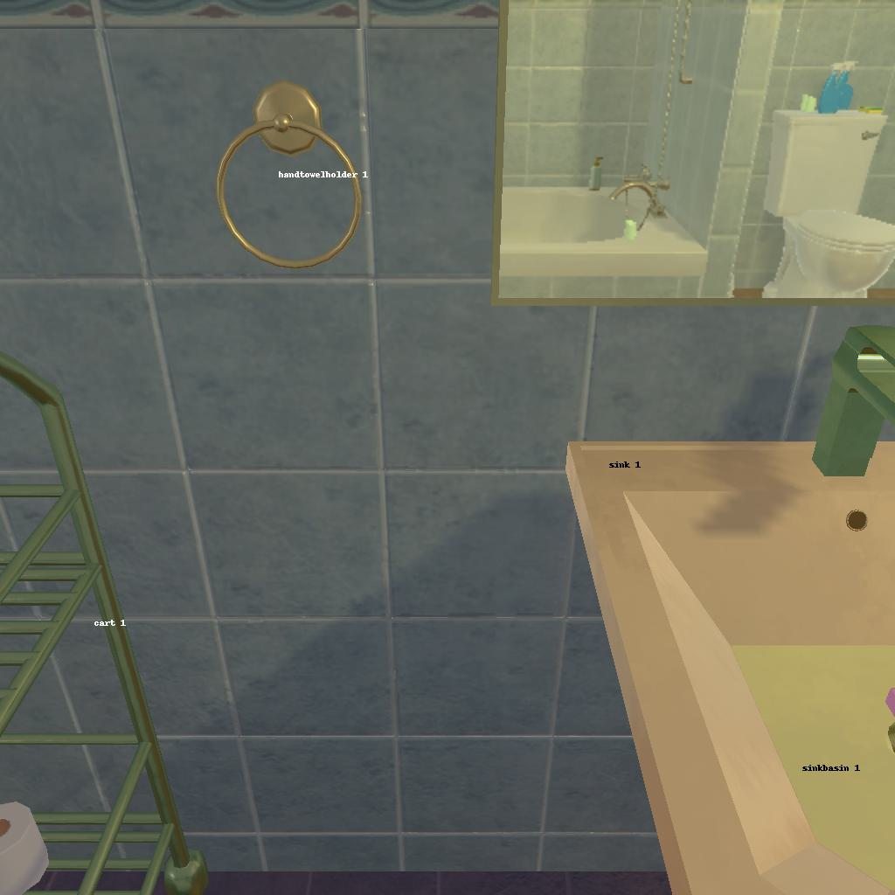

---------------------------------------------------------task: 25---------------------------------------------------------
--------------------------------------------------------------------------------------------------------------------------------------------------------------------
--------------------------------------------------------------------------------------------------------------------------------------------------------------------
Step:--------------------------------------------------------------------------0-------------------------------------------------------------------------------
----------------------------------------
VLM Prompt:
Image1:
**Instruction**
1. Analyze the provided image to identify all visible household objects, focusing on those relevant to the task description "put two dishsponge in cart."
2. Use the analysis of the image and the task hint "The agent must find an object of the desired type, pick it up, find the correct location to place it, put it down there, then look for another object of the desired type, pick it up, return to previous location, and put it down there with the other object." to answer the question: what is the most reasonable action in the choices for the task description "put two dishsponge in cart"?
4. Decide and write the answer using the template: The answer is: (i): , where i is the real number. If there is no desired object in the image, search every place based on **Initial Observation** to find the object. And if no one is exactly correct, choose a similar answer.
**Initial Observation**
You are in the middle of a room. Looking quickly around you, you can see bathtub (1), bathtubbasin (1), cart (1), toilet (1), garbagecan (1), toiletpaperhanger (1), shelf (1-4), sink (1), sinkbasin (1), handtowelholder (1)
**Answer Choices**
(1): go to bathtub 1
(2): go to bathtubbasin 1
(3): go to cart 1
(4): go to toilet 1
(5): go to garbagecan 1
(6): go to toiletpaperhanger 1
(7): go to shelf 1
(8): go to shelf 2
(9): go to shelf 3
(10): go to shelf 4
(11): go to sink 1
(12): go to sinkbasin 1
(13): go to handtowelholder 1
**Answer**
Let's think step by step by following the instructions.
----------------------------------------
----------------------------------------
Original Response:
The task is to put two dishsponges in the cart. The image does not show any dishsponges, so we must search every place based on the Initial Observation to find the object. Since dishsponges are typically stored on shelves or near sinks in a household setting, the most reasonable places to check first would be the shelves or the sink area.
The answer is: (7): go to shelf 1. If the dishsponge is not found there, the agent should proceed to check the other shelves and the sink area, following the order of (8): go to shelf 2, (9): go to shelf 3, (10): go to shelf 4, (11): go to sink 1, and (12): go to sinkbasin 1.
----------------------------------------
----------------------------------------
>>> Refine Original VLM Response and Get Pure Action: go to shelf 1
----------------------------------------
-----------------------------------------------------------------
Running time: 13.184828042984009 seconds
Total Money: 12.260910000000003
-----------------------------------------------------------------
-----------------------------------------------------------------
Text Observation:You arrive at loc 6. On the shelf 1, you see a papertowelroll 1, a toiletpaper 1, and a soapbar 1.
-----------------------------------------------------------------
UNSUCCEED